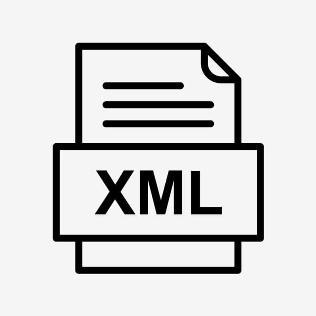

I web service sono sistemi software che garantiscono interoperabilità tra applicazioni in rete.
A differenza di un sito web pensato per essere letto da un utente tramite browser,
il web service è un'interfaccia progettata per essere consumata da un altro programma.
Permettono ad applicazioni scritte in linguaggi diversi, come Java e Python, di comunicare
usando standard comuni come HTTP e XML/JSON.
Un esempio pratico: un'app meteo sul telefono non salva le previsioni localmente,
ma fa una richiesta a un server tramite un web service che restituisce i dati aggiornati.
SOAP vs REST
SOAP
SOAP (Simple Object Access Protocol) ha regole molto rigide.
Utilizza esclusivamente XML e ogni messaggio è racchiuso in una "busta" con un'intestazione (Header)
e un corpo (Body).
Richiede un file WSDL che descrive esattamente quali metodi il server offre, quali parametri accettare
e cosa restituirà: senza questo file il client non può comunicare.
È tipicamente stateful, cioè mantiene memoria delle operazioni precedenti,
utile in transazioni complesse.
REST
REST (REpresentational State Transfer) non è un protocollo ma uno stile architetturale.
Si basa sul concetto di risorsa identificata da un URL univoco.
È flessibile: usa principalmente JSON ma può trasmettere anche XML, HTML o testo semplice.
È stateless: ogni richiesta è indipendente e il server non ricorda le chiamate precedenti.
Sfrutta i metodi HTTP standard per le operazioni CRUD:
GET — leggi una risorsa
POST — crea una nuova risorsa
PUT/PATCH — aggiorna una risorsa
DELETE — elimina una risorsa
Quando usare quale
Scegli SOAP se lavori in ambito bancario o assicurativo dove la sicurezza delle
transazioni deve essere garantita da standard internazionali, oppure hai bisogno di un contratto
rigido tra sistemi.
Scegli REST se sviluppi app mobile o web dove velocità e consumo dati sono critici,
o stai progettando microservizi che devono scalare rapidamente.
Struttura di un'applicazione REST in PHP
Un'applicazione web ben strutturata si divide in quattro livelli:
1. Presentation Layer
Tutto ciò che l'utente vede e con cui interagisce.
Tecnologie: HTML, CSS, JavaScript.
Non deve mai contenere logica di business.
2. Service Layer / Web Services
Funge da ponte tra front-end e logica interna.
Riceve le richieste dal front-end, le valida e le smista alla logica interna.
Restituisce i dati in JSON.
3. Business Logic Layer
Contiene l'intelligenza dell'applicazione.
Applica le regole del dominio reale.
Rimane invariato anche se cambia il front-end.
4. Data Access Layer
L'ultimo strato, quello che comunica con il database.
Esegue le query SQL tramite PHP con PDO o MySQLi.
Non sa nulla dell'interfaccia: sa solo come salvare, leggere, aggiornare o eliminare dati.
XML

XML (eXtensible Markup Language) è un metalinguaggio per definire linguaggi di markup.
A differenza di HTML, XML permette di definire tag personalizzati in base alle esigenze.
È ampiamente usato nei Web Service SOAP.
Un documento XML deve essere well formed, cioè deve avere:
Un prologo: <?xml version="1.0" encoding="UTF-8"?>
Un unico elemento radice che contiene tutti gli altri nodi
Tutti i tag bilanciati, aperti e chiusi correttamente
DTD (Document Type Definition)
Il DTD descrive il linguaggio XML definendo quali elementi e attributi sono ammessi
e i vincoli sui loro valori.
Supporta solo tipi testuali e ha vincoli sugli attributi molto limitati.
XSD (XML Schema Definition)
XSD supera i limiti del DTD.
È scritto in formato XML, supporta tipi di dato primitivi come interi, float e booleani,
supporta i namespace e permette ereditarietà dei tipi.
Perché ho scelto questo argomento
I Web Services sono uno degli argomenti che mi hanno appassionato di più durante l'anno.
È un tema concreto e attuale: capire come applicazioni diverse riescono a comunicare tra loro
usando standard comuni mi ha dato una visione più chiara di come funziona davvero il web
dietro le quinte.
Mi sono preparato su questo argomento con particolare cura, ed è uno di quelli in cui mi
sento più sicuro sia dal punto di vista teorico che pratico.